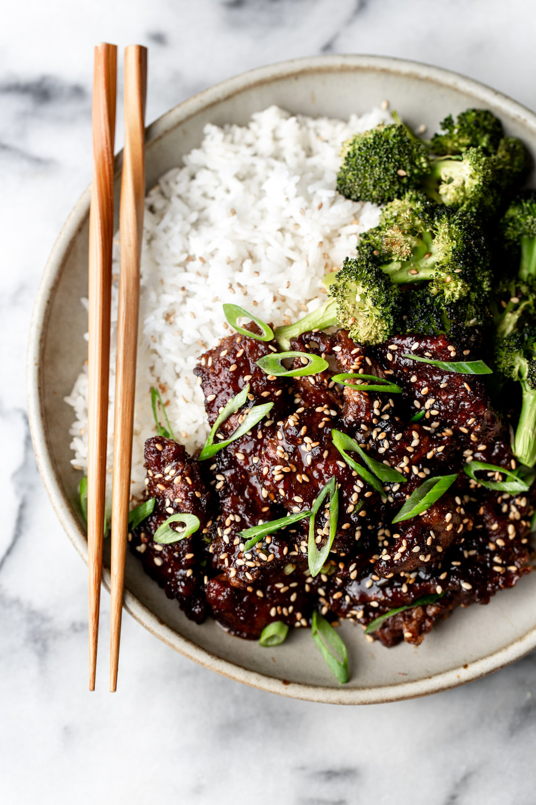

Mongolian Beef

Description
Mongolian beef is a tasty, quick and nutritious dish that can be made in bulk for meal prepping!
It's my favorite go-to dish for something easy to make that will hit all your macro goals when protein is a priority.
If you're looking for a staple you can eat every day of the week look no further.
Ingredients
- 2 tablespoons vegetable oil
- 1/2 teapsoon ginger (minced)
- 4 cloves garlic (minced)
- 1/2 cup soy sauce
- 1/4 cup water
- 1/2 cup brown sugar
- 1 pound ground beef
- 1/3 cup cornstarch
- 2 green onions (sliced)
- Sesame seeds (to garnish)
Steps
- Slice the flank steak into thin ¼" pieces. Toss with cornstarch, shaking off any excess and set aside.
- In a 10-inch skillet, heat 2 teaspoons of oil over medium-low heat. Stir in minced ginger and garlic and cook until fragrant, about one minute.
- Add soy sauce, water, and brown sugar to the skillet, then bring to a boil. Let it boil for 3-5 minutes until slightly thickened. Transfer to a small bowl and set aside.
- Heat 1 tablespoon of oil in a separate pan or wok over medium-high heat. Cook the beef in small batches for about 2 minutes. It does not need to be cooked through.
- Once all of the beef is browned, add the beef and sauce back to the skillet and heat over medium until hot and bubbly.
- Remove from heat and stir in green onions. Serve over rice. Garnish with sesame seeds